- 주제: Nuvoton M55M1 보드에서 4종 폐기물을 분류하는 임베디드 비전 데모
- 인식 클래스: Paper, Plastic Bottle, Aluminum Can, Paper Cup
- 모델: YOLOX-Nano, 모델 크기 2MB 이하
- 성능: 기준 4종 분류 정확도 90.1%
- 변환 경로: PyTorch → ONNX → TensorFlow Lite → Vela
| 대목차 | HTML 반영 내용 |
|---|---|
| 사례 소개 | 프로젝트 개요, 기대 결과, 실제 성능 |
| 자료집/모델 훈련 | 데이터 수집, LabelImg, yolo2cocojson, 학습 사양, 환경 구축 |
| PC 학습 | YOLOX 훈련, ONNX, ONNX to TFLite, Vela |
| C++ 소프트웨어 흐름 | BoardInit, InferenceTask, DetectorPostProcessing, Main loop |
| DEMO | 링크 반영 |
이 프로젝트는 M55M1 개발 보드와 카메라 모듈을 이용해 생활 쓰레기를 실시간으로 인식하고, 화면에 분류 결과를 즉시 표시하는 데모입니다. 가정 환경에서 아이가 헷갈리기 쉬운 종이류, 플라스틱 병, 알루미늄 캔, 종이컵을 자동으로 구분하는 것이 목표입니다.
TinyML 관점에서 경량 객체 탐지 모델을 보드에 배포하는 전체 흐름을 다룹니다. 즉, 데이터 수집과 라벨링, PC 학습, 모델 변환, 보드 추론, 화면 표시까지를 하나의 사례로 묶어 설명합니다.
- M55M1에서 실행 가능한 크기를 맞추기 위해 YOLOX_Nano_ti_lite_nu 계열 모델을 사용
- 외부 HyperRAM 없이도 탑재 가능한 2MB 이하 모델을 목표로 구성
- 카메라 프레임을 받아 객체 탐지 후 클래스와 위치를 화면에 바로 출력
- 4종 분류 정확도가 90.1%라고 명시합니다.
예시는 종이류, 플라스틱 병, 알루미늄 캔, 종이컵을 동시에 인식하고 즉시 분류하는 장면을 보여줍니다. 즉 단일 클래스 판별이 아니라 여러 생활 폐기물을 한 화면에서 동시 검출하는 데 초점을 둔 사례입니다.
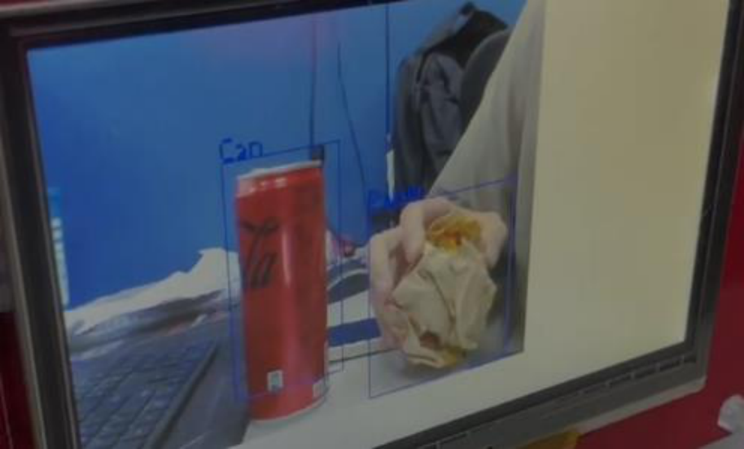
자체 촬영한 약 400장의 쓰레기 사진으로 데이터셋을 만들고, LabelImg로 YOLO 형식 라벨을 작성한 뒤 학습용으로 COCO JSON 형식으로 변환하는 절차를 설명합니다.
| 항목 | 내용 |
|---|---|
| 클래스 | Paper, Plastic Bottle, Aluminum Can, Paper Cup |
| 학습 이미지 | Train 378장 / Valid 36장 / Test 19장 |
| 라벨링 도구 | LabelImg |
| 데이터 포맷 | YOLO 라벨링 후 COCO JSON으로 변환 |
| 모델 | YOLOX-Nano (Light Model) |
- 직접 촬영한 사진을 충분히 모읍니다. 예시는 약 400장을 사용합니다.
- LabelImg로 라벨링을 진행합니다.
- 학습 형식이 프로젝트 요구와 같은지 확인합니다. 이번 사례는 최종적으로 COCO JSON을 사용합니다.
- 필요하면 원래 YOLO 형식 라벨을 COCO JSON으로 변환합니다.
- 링크에서 labelImg.exe를 내려받습니다.
- 실행 후 데이터셋 위치와 저장 위치를 먼저 지정합니다.
- LabelImg 저장 형식 중 이번 프로젝트는 YOLO 형식을 사용합니다.
- label.txt에 클래스 목록을 정의한 뒤 Create RectBox로 라벨링합니다.
- YOLO 라벨 완료 후 yolo2cocojson.py로 COCO JSON으로 변환합니다.
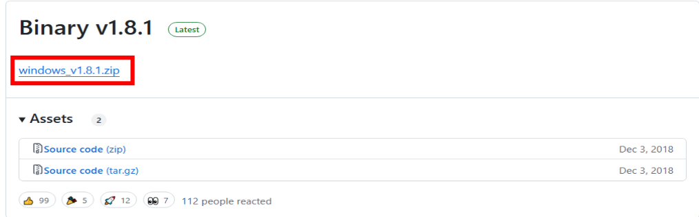
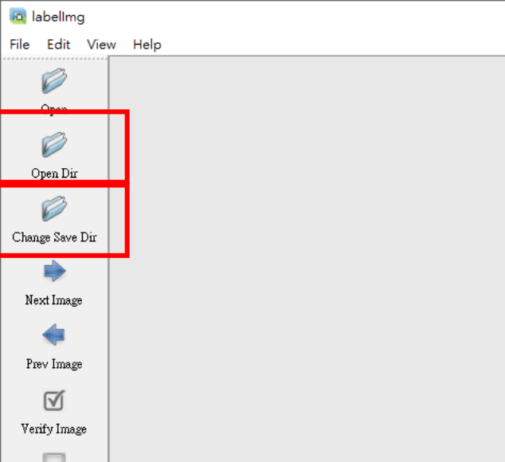
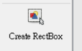
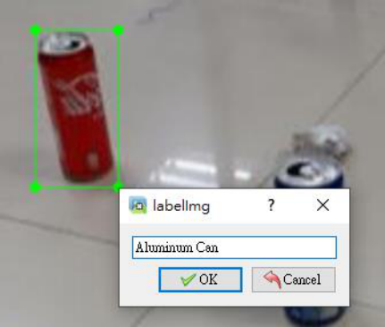
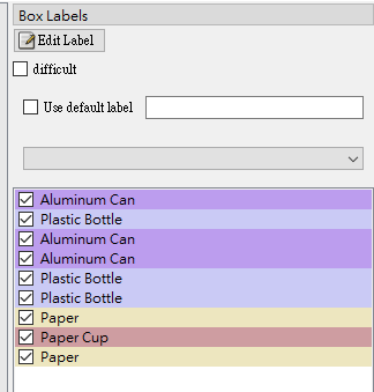
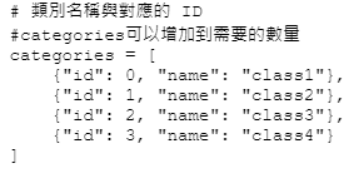
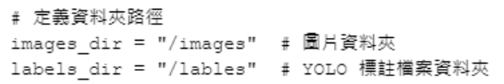
- 이미지 수가 많을수록 학습 성능이 좋아진다고 설명합니다.
- 학습 프레임워크가 요구하는 형식과 라벨 포맷이 일치하는지 먼저 확인해야 합니다.
- 이번 사례는 최종 학습 입력을 COCO JSON으로 맞추는 구성이므로, YOLO 라벨을 그대로 사용하지 않고 변환 단계를 둡니다.
PC에서는 Anaconda 기반 가상환경을 만들고 PyTorch와 MMCV를 설치한 뒤, YOLOX-Nano를 학습합니다. 이후 ONNX와 TensorFlow Lite를 거쳐 Vela 최적화 모델을 생성합니다.
| 항목 | 값 |
|---|---|
| GPU | NVIDIA GTX 1080 Ti |
| CUDA | 11.8 |
| PyTorch | 2.0.0 |
| Python | 3.10 |
| 학습 시간 | 약 1.5시간 |
GPU 사양에 맞는 CUDA와 Torch 버전을 먼저 정하고, 이후 Python 3.10과 Anaconda를 이용해 환경을 구성하라고 설명합니다. 예시 장비는 GTX 1080 Ti입니다.
conda create --name yolox_nu python=3.10 conda activate yolox_nu gh repo clone MaxCYCHEN/yolox-ti-lite_tflite_int8 python -m pip install --upgrade pip setuptools python -m pip install mmcv==2.0.1 -f https://download.openmmlab.com/mmcv/dist/cu118/torch2.0/index.html python -m pip install --no-input -r requirements.txt python setup.py develop
annotations, train2017, val2017 구조를 기준으로 학습 경로를 맞추도록 설명합니다.
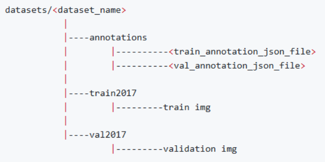
| 항목 | 설명 |
|---|---|
| 입력 이미지 크기 | 프로젝트 설정에 맞게 조정 |
| 클래스 수 | 4개 |
| 권장 epoch | 150~200 |
| 배치 크기 | 64 |
| 모델 크기 | 2MB 이하, YOLOX_Nano_ti_lite_nu 약 0.91MB |
에서 강조하는 조정 포인트는 입력 이미지 크기, 클래스 수, epoch 수입니다. 특히 epoch를 과도하게 늘리면 overfitting이 발생할 수 있어, 150~200 수준에서 검증하며 조정하는 흐름을 제시합니다.
python tools/train.py -f exps/default/yolox_nano_ti_lite_nu.py -d 1 -b 64 --fp16 -o -c pretrain/tflite_yolox_nano_ti/320_DW/yolox_nano_320_DW_ti_lite.pth
python tools/export_onnx.py -f exps/default/yolox_nano_ti_lite_nu.py -c YOLOX_outputs/yolox_nano_ti_lite_nu/latest_ckpt.pth --output-name YOLOX_outputs/yolox_nano_ti_lite_nu/yolox_nano_nu_garbage.onnx onnx2tf -i YOLOX_outputs/yolox_nano_ti_lite_nu/yolox_nano_nu_garbage.onnx -oiqt -qcind images YOLOX_outputs\yolox_nano_ti_lite_nu\calib_data_320x320_n200.npy "[[[[0,0,0]]]]" "[[[[1,1,1]]]]" set MODEL_SRC_FILE=yolox_nano_ti_lite_nu_full_integer_quant.tflite set MODEL_OPTIMISE_FILE=yolox_nano_ti_lite_nu_full_integer_quant_vela.tflite
- export_onnx.py는 학습된 .pth 체크포인트를 ONNX로 내보냅니다.
- onnx2tf는 ONNX를 정수 양자화된 TFLite로 바꾸며, 보정용 .npy 데이터가 함께 사용됩니다.
- Vela는 Ethos-U NPU에 맞는 배포용 TFLite를 생성합니다.
후반부는 BoardInit.cpp, InferenceTask.cpp, DetectorPostProcessing.cpp, Main.cpp를 중심으로 보드 초기화부터 추론 결과 표시까지를 설명합니다.
BoardInit.cpp와 mpu_config_M55M1.h 구간은 보드 구동에 필요한 초기화 흐름을 단계별로 설명합니다. 핵심은 시스템 클록과 모듈 클록 설정, UART6 디버그 포트 준비, HyperRAM 통신 포트 초기화, Arm Ethos-U NPU 초기화, 보호 레지스터 재잠금까지를 한 번에 끝내는 것입니다.
- 내부 및 외부 오실레이터를 활성화하고 안정화될 때까지 대기합니다.
- APLL을 시스템 클록 소스로 사용하며 동작 주파수는 180 MHz입니다.
- 카메라, 메모리, 통신, 디버그 출력에 필요한 하드웨어 모듈 클록을 순차적으로 켭니다.
- UART6을 디버그용 직렬 포트로 지정해 printf 기반 로그를 출력할 수 있게 합니다.
- UART 클록 소스와 멀티펑션 핀을 함께 설정해 콘솔 출력 경로를 완성합니다.
- HyperRAM은 통신 포트를 초기화한 뒤 Direct Map 모드로 진입해 접근 효율을 높입니다.
SetDebugUartCLK(); SetDebugUartMFP(); InitDebugUart(); HyperRAM_PinConfig(HYPERRAM_SPIM_PORT); HyperRAM_Init(HYPERRAM_SPIM_PORT); SPIM_HYPER_EnterDirectMapMode(HYPERRAM_SPIM_PORT);
- Arm NPU 사용이 활성화된 경우 초기화 함수를 호출하고 정상 상태를 확인합니다.
- 이 단계가 완료되어야 양자화된 객체 검출 모델이 임베디드 보드에서 안정적으로 동작합니다.
- 초기화 전에는 보호 레지스터 잠금을 해제하고, 모든 설정이 끝난 뒤 다시 잠가 보안 상태를 복원합니다.
- info 로그를 통해 초기화 완료 메시지를 남기도록 설명합니다.
추론 태스크는 FreeRTOS 큐를 통해 입력 프레임을 받고, 모델 실행 후 출력 Tensor를 후처리기로 넘깁니다. RunInference, GetOutputTensor, xQueueReceive, xQueueSend를 핵심 호출로 짚습니다.
bool runInf = m_model->RunInference(); TfLiteTensor *modelOutput0 = m_model->GetOutputTensor(0); pPostProc->RunPostProcessing(...); xQueueReceive(...); xQueueSend(...);
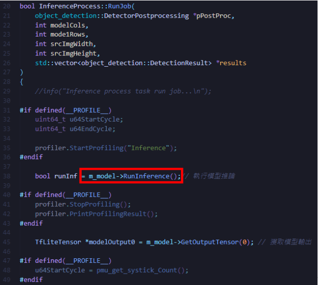
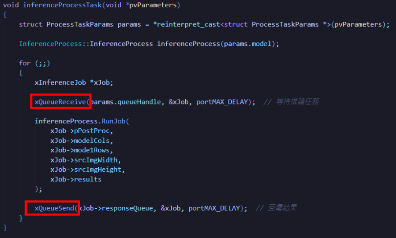
후처리는 모델 출력 Tensor를 구조화된 검출 결과로 바꾸는 단계입니다. 여기서는 후처리 파라미터 설정, Tensor 해석, NMS, 원본 이미지 좌표 복원, 최종 결과 구조 생성까지를 순서대로 수행합니다.
후처리 초기화 구간에서는 검출 결과를 얼마나 남길지와 중복 박스를 어떻게 제거할지 결정하는 파라미터를 설정합니다.
threshold: confidence threshold nms: IoU threshold for non-max suppression numClasses: number of garbage classes topN: maximum number of returned detections
| 파라미터 | 의미 |
|---|---|
| threshold | 검출 신뢰도 하한값이며 이 값보다 낮은 박스는 무시합니다. |
| nms | IoU 기준의 중복 제거 임계값입니다. |
| numClasses | 모델이 지원하는 폐기물 클래스 수입니다. |
| topN | 최종 반환할 최대 결과 개수입니다. |
- YOLO 출력 Tensor를 구조화된 네트워크 결과로 초기화합니다.
- modelOutput0에는 경계 상자 좌표와 클래스 정보가 함께 들어 있습니다.
- 양자화 모델 출력값을 다시 사용하기 위해 scale과 zeroPoint를 적용합니다.
- 모델 출력에서 각 박스의 좌표, 크기, 신뢰도를 꺼내고 threshold를 넘는 후보만 남깁니다.
- 후보 좌표는 모델 입력 비율 기준이므로 이후 원본 영상 비율로 다시 환산해야 합니다.
- NMS 단계에서는 IoU가 높게 겹치는 박스를 제거하고 가장 신뢰도 높은 결과만 유지합니다.
- 이 과정을 거쳐 각 객체가 하나의 대표 박스로 정리됩니다.
- 모델 출력 박스를 원본 이미지 크기로 되돌려 실제 화면 좌표로 변환합니다.
- 최종 결과 구조에는 m_x0, m_y0, m_w, m_h가 저장됩니다.
- 신뢰도는 m_normalisedVal, 클래스는 m_cls에 저장됩니다.
메인 루프는 데이터 준비, 추론 실행, 후처리, 결과 표시를 반복하는 제어 중심부입니다. 프레임 버퍼 상태를 검사하고, 준비가 끝난 프레임만 추론 태스크로 넘긴 뒤, 후처리 결과를 화면에 그립니다.
get_empty_framebuf(); get_full_framebuf(); get_inf_framebuf(); imlib_nvt_scale(...); DrawImageDetectionBoxes(...); PresentInferenceResult(...); vTaskDelay(1);
- 새 프레임이 들어왔는지 확인하고 비어 있는 버퍼와 가득 찬 버퍼를 찾습니다.
- 준비된 프레임이 있으면 추론 태스크로 전달하고 RunInference() 완료를 기다립니다.
- 후처리에서는 NMS, 좌표 복원, 유효 결과 선별을 수행합니다.
- 완성된 결과를 LCD나 직렬 출력 장치에 표시하고, 처리된 버퍼 상태를 다시 비웁니다.
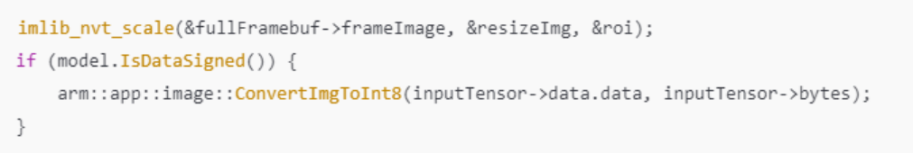
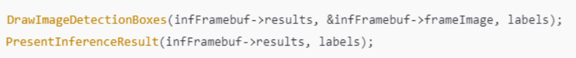
오류가 발생하면 무조건 처음부터 다시 시작하는 구조가 아니라, 문제 성격에 따라 적절한 단계로 되돌아가 재시도하도록 설명합니다.
- 프레임 데이터가 손상되었거나 비어 있으면 데이터 준비 단계로 돌아갑니다.
- 모델 초기화나 추론 실행이 실패하면 모델을 다시 준비하고 추론 태스크를 재시작합니다.
- 후처리 파라미터가 맞지 않으면 입력 파라미터나 출력 Tensor 설정을 다시 조정합니다.
- get_empty_framebuf()는 새 이미지 데이터를 채울 수 있는 버퍼를 찾습니다.
- get_full_framebuf()는 추론 가능한 입력 프레임을 찾습니다.
- get_inf_framebuf()는 현재 추론 중인 버퍼를 추적합니다.
- 메인 루프 시작 전에는 YOLO 모델을 초기화하고 Tensor 버퍼를 할당한 뒤 모델 길이와 메타정보를 로드합니다.
마지막 장은 DEMO 영상 링크입니다. 카메라 입력을 받아 실시간으로 폐기물 클래스를 판단하고, 화면에 검출 박스와 분류 결과를 함께 표시하는 흐름을 확인할 수 있습니다.